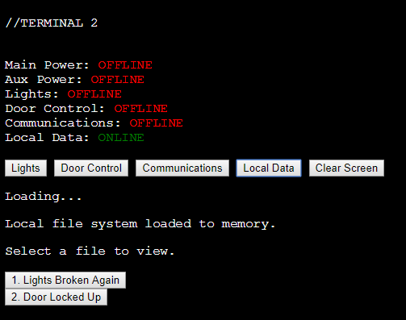
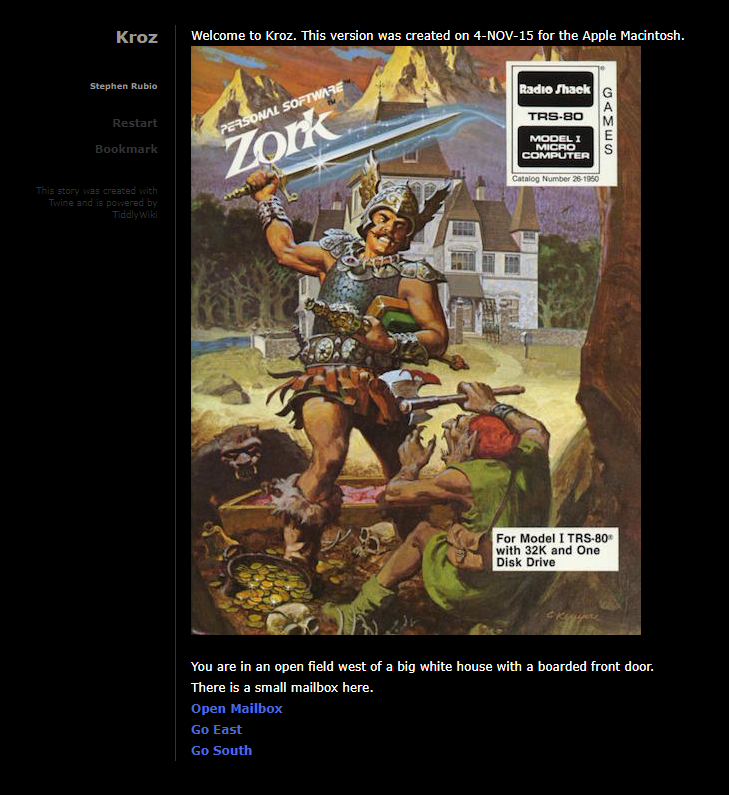

Portfolio
I'm currently working on a series of Skyrim dungeons using the Creation Kit and Papyrus. The dungeons in Skyrims, while an incrimental improvement on their predecessor, were a part of the game that I've always felt like could be improved, so I'm trying to design dungeons with more complex layouts and puzzles to take advantage of what the engine can do.
Here's a zip file of what I have so far
Eventide is a first-person parkour game made in the Unreal Engine. Inspired by Mirror's Edge's Pure Time Trials DLC, and indie title Refunct, this game is a speed challange level that test the player on the game's low-level mechanics. While it uses the first-person perspective, it impliments a third-person animation blueprint so that they player can see their limbs and body in the world, grounding the action and, hopefully, adding a weight to movement. This pushes the player towards a flow state that the Mirror's Edge games are so good at evoking, but only after they have mastered those low-level mechanics. I might add more levels in the future, but the one currently included in the game's 1.0 release captures most of what I wanted to do.
You can see the code and project files on GitHub here.
Play Here
Derelict 54 came about when I tried to take the design sensibilities of Terminal 2, an HTML adventure game I made, and my writing on the subject to create a 3D adventure game with puzzles that felt like grounded extensions of the setting, rather than gamey contrivences. Knowing that 3D development is often prohibitively difficult for large solo projects, I created a rough take on what I hope to evolve into a more polished project.
Derelict 54 follows the same rhythms of play that Terminal 2 did, but from the first-person perspective, and with a greater emphasis on atmosphere and tone. It dumps the player onto a broken-down space station, and asks them to figure out how to escape. It has some basic exploration and resource management elements that my previous games haven't had, which let me focus more on level design. This was also my first game in the Unreal Engine where I really had to dig into scripting, applying my more traditional computer science knowledge to Unreal's blueprint system. Getting specific rooms to be locked off until the player had pressed the right buttons required more back-end work than I had done previously, and allowed me to plot player paths with more detail, supporting them with solid level design. The result, I hope, emulates the quiet tension of the many adventure games that inspired it.
I have a playable version uploaded here. Just unzip the file and run Derelict 54.exe.
Play Here
DM-LaserTag was my first map for Unreal Tournament, where I tried to capture the style of all the low-budget laser tag arenas I went to as a kid. It’s packed with glowing surfaces, weird, misplaced cover, and entirely too much neon.
Unreal Tournament is one of the few games still carrying the arena shooter torch, so it was a perfect fit for this idea. This was my first time creating a complete 3D shooter, instead of a tech demo, so I got to practice some of my favorite design ideas.
The core design concept was an easily readable map that dishes out its complexity slowly over time instead of all at once. The map is structured around a large, rectangular room with a hexagonal pit in the center that leads to the second floor, making it easy for the player to understand the basic layout and figure out where they are quickly, which is necessary for a game moving at UT’s speed. Adding teleporters to the mix further necessitates the player to be able to quickly get a sense of where they are. The bottom floor put this philosophy to the test, as I tried to recreate the mazes that many laser tag arenas contain. Doing this while sticking to the easy readability phliosophy was difficult, so I split the map into four sections, and color-coded all the assets in each area accordingly. This means that, even when the player is jumping across the map at crazy speeds, they can quickly see the dominant color in a scene and figure out where they are.
With that navigation established, I could proceed to add more complexity and discoveries for the player to find. Hidden secrets are one of my favorite parts of older shooters like Doom and Quake, and I’ve scattered a few throughout my map to keep it from feeling too samey, and to keep the player constantly wondering at what’s there.
How to Play The Map (Warning: This is needlessly complicated until Epic figures out a better way of sharing user maps)
Requires Unreal Tournament from the Epic Games Launcher
- Download the map from here (Compiled May 28, 2017)
- Copy it to [Unreal Tournament Install Directory]\UnrealTournament\Content\Paks
- Open Unreal Tournament
- Click “Play”, “Start LAN Match”, “Custom”
- Under the Maps dropdown, select DM-LaserTag1
Terminal 2 was my first attempt at capturing a type of game genre that I noticed emerging in first-person adventure games I loved. Soma, Near Death and Alien Isolation all involved trying to fix up a decaying, human-created station, while completing objectives and avoiding hazards. I found these games incredibly engaging, not for their horror elements and puzzles, but instead for the rhythms of play that they created, with players moving from area to area, fixing the power, looking for new objectives, and trying to stay alive. I loved this genre enough that I wrote an entire blog post about how fascinating the ideas are.
Terminal 2 focused on what I think is an underexplored element of those games, namely, the broken computer terminals scattered throughout the environment that the player would struggle with. I tried to keep it localized to a single, diegetic screen, pretending to be the fictional computer terminal the player was interacting with. The puzzles in the game aren’t complex or mind-bending, and are mostly about thoroughly searching all available areas and following written directions, which is exactly what made the games that inspired it so appealing.
I wrote this entirely using HTML and JavaScript, instead of something more powerful like Twine, but I tried to get as much substance out of those tools as I could to get across the feeling of games with much larger budgets and scopes.

Play Here
Kroz is a Twine remake of Zork, Infocom’s classic text adventure game. I was really interested at the time in the difference between text parser-based adventure games and more contemporary adventure games with clearly communicated inputs.
Kroz works more as an experiment than a satisfying game in and of itself, because it highlights how many of the puzzles that worked so well in Zork are less effective when every option the player can take has to be conveyed to them directly. Still, the less confusing structure of a Twine game, coupled with its use of the widely-know hypertext format, made it more accessible than Zork, which has a well-deserved reputation for impenetrability. Despite having much more advanced tools than Infocom’s original team, I left Kroz feeling jealous of the format that they were able to use, with a text parser allowing for much more creative, if difficult to discover, solutions to problems.
I find the experiment to still be valuable, however, because many contemporary adventure games cannot pull off the puzzles and aesthetics of Zork, and learning how to properly adapt and explore them could give designers access to a wealth of underexplored potential.
Note: I later found out that the devs at Infocom actually didn't like the cover I ended up using. However, I lost the original Twine project files, so I can't change it to the objectively better cover, here.

Play Here
Cloud Notes is a piece of non-game software that I wrote to serve as a cross-platform text editor synced over cloud services. I wrote it to have a place to easily store links, notes, and other data that I could access from anywhere. See here